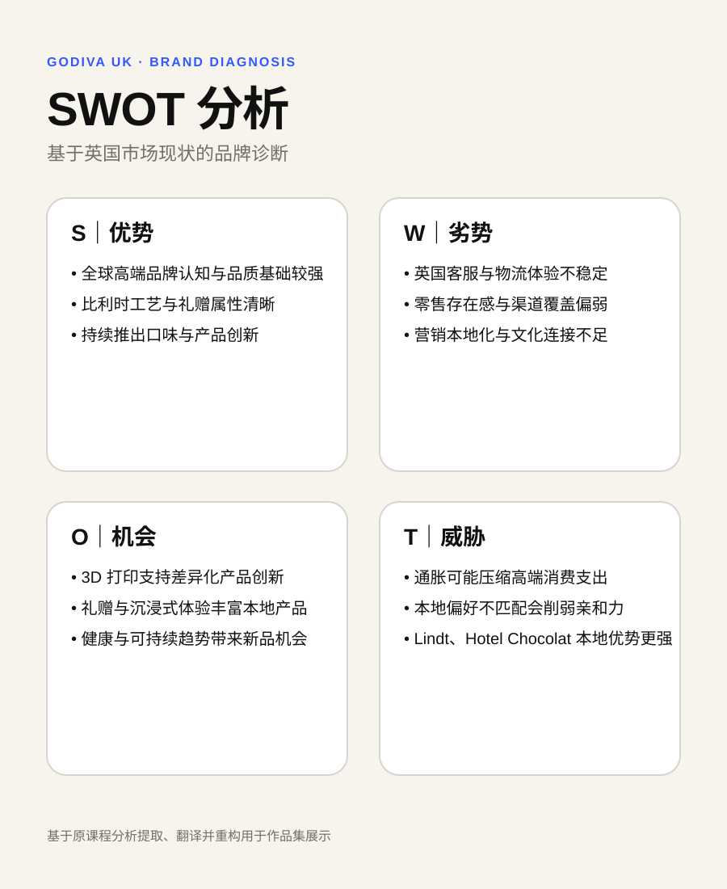
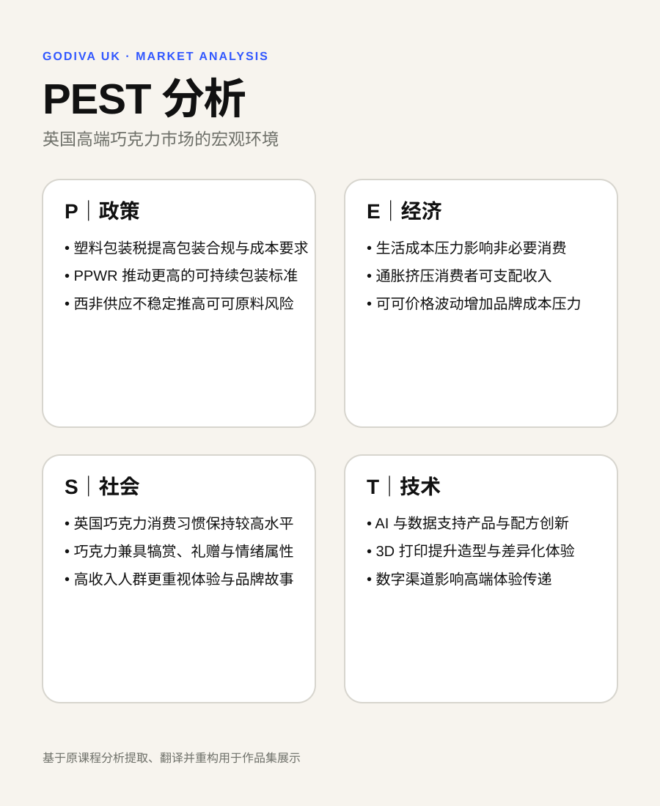

01 / 市场洞察AI 消费市场
AI 消费市场
付费机会洞察
从市场变化、消费者任务与竞争格局判断 AI 的付费价值与下一增长机会。
华威大学市场营销与战略硕士。关注品牌策略、消费者洞察、数字营销与定量研究。
从市场变化、消费者任务与竞争格局判断 AI 的付费价值与下一增长机会。
从市场诊断到本地化品牌策略。
比较两种社媒逻辑、平台表现与消费者路径差异。
故事质量 → 叙事传输 → 购买意愿。
覆盖广泛需求，并持续向 Coding、文件、浏览器和多步骤执行扩展。
例如 Cursor 把 Agent、Cloud Agents 与代码工作流放在同一产品中，Pro 方案为 20 美元/月。
求职、申请、考试、重要项目。更适合短周期付费。
Coding、数据、设计、复杂办公。订阅价值更清晰。
付费理由最弱。
使用多，但免费替代强。
约 1.5 亿美元 · 2026 Q1 AI Companion 收入 · 较 2023 Q1 超过 12×
先解决包装、配送、订单追踪、客服与补偿机制，让实际体验与 luxury positioning 一致。
把 Belgian craftsmanship 放入英国消费者熟悉的 premium occasion，而不是重复强调品牌来源。
用电商、内容、会员与订阅把一次性 gifting 延伸为长期关系。
把“奢侈”从品牌自我描述变成消费者可感知的体验。
搜索关注低、本地存在感弱。
关键问题：为什么要注意 GODIVA？
品牌资产与英国消费场景连接不足。
关键问题：为什么与我有关？
包装、配送与客服问题削弱高端价值感知。
关键问题：高端价格是否匹配实际体验？
低评分提示复购风险。
关键问题：第一次购买后，为什么还要回来？
用英式下午茶建立本地相关性。
改善包装、配送、追踪与客服体验。



项目期间持续观察社媒表现。互动率与触达会随内容发布、活动节奏与付费投放变化，因此以上数字反映的是当期表现，用于比较两种社媒模式，而不是长期固定值。
趋势内容、创作者、联名与 UGC 更强，短期激活能力更突出。
LifeWear 表达更稳定，StyleHint 与产品、库存、到店自提的连接更清晰。
补强产品级 O2O 路径，并减少对高成本 campaign / paid media 的持续依赖。
保留 LifeWear 与低摩擦购买路径，同时增加更符合 TikTok 的情境化、教育型与参与型内容。
人物、因果与可信度影响沉浸。
产品最好真正推动情节。
互动不必然等于购买意愿。
长期品牌意义更适合高质量故事。